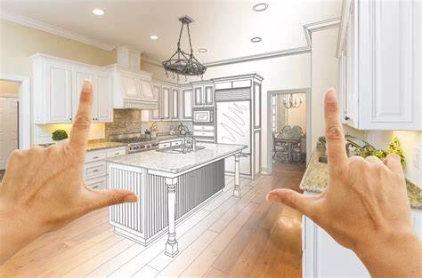
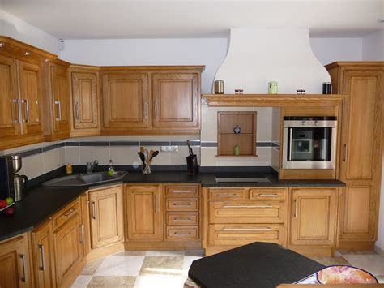

- 
- 

Travaux de construction et d'extension en Île-de-France
Vous envisagez l'agrandissement d'une construction existante ? Vous recherchez une entreprise fiable, de qualité et compétente ? L'entreprise Varren Rénovation réalise tous vos travaux sur plan ou en coordination avec les architectes. Selon vos besoins, notre équipe de professionnels, qualifiés, intervient pour les particuliers et les professionnels, et réalise dans le respect du bâtiment existant, de vos exigences et de votre budget, vos travaux d'extension.
- Extension de bâtiment,
- Extension latérale
- Extension par surélévation
- Aménagement des combles
Notre passion et notre savoir-faire nous permettent de vous accompagner pas à pas dans vos futures créations (organisation et suivi de chantier). Chiffrage précis avec les vrais prix et délais pour votre projet.
Le respect des lieux, le choix des matériaux, la tenue des délais et surtout votre satisfaction sont notre priorité.